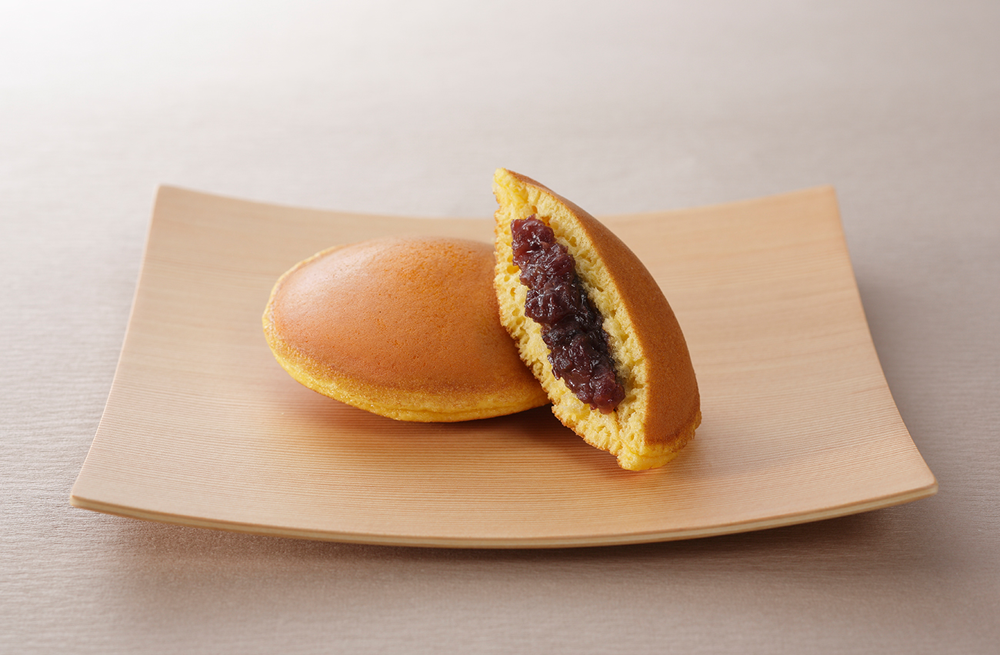

銅鑼燒

介紹
銅鑼燒（日語：どら焼き、ドラ焼き、銅鑼焼き，羅馬字：dorayaki），香港又稱豆沙包或豆沙餅，中國大陸舊譯甜餡餅，是一種和菓子，用兩片圓盤狀、類似美式鬆餅的烤餅皮包裹著豆沙餡，形狀類似兩個合在一起的銅鑼。
作法
食材:低筋麵粉、雞蛋、蜂蜜、上白糖、水、小蘇打粉、沙拉油
餡料:奶油、紅豆豆沙餡
- 取一盆放入低筋麵粉、雞蛋、蜂蜜、上白糖、小蘇打粉與水，混合均勻至看不見粉塊，並室溫靜置30分鐘。
- 平底鍋中抹上一層薄薄的沙拉油，開中小火加熱後倒入適量麵糊。
- 待麵糊表面冒出許多細小泡泡後，再翻面繼續煎熟。重複上述方法煎出數片餅皮後放涼備用。
- 製作奶油紅豆沙餡。將含鹽奶油與顆粒紅豆餡一起放入碗中，以微波爐500W加熱30～40秒後混合均勻即成。
- 取大小形狀相仿的兩片銅鑼燒餅皮，夾入適量奶油紅豆餡後，即可享用囉！